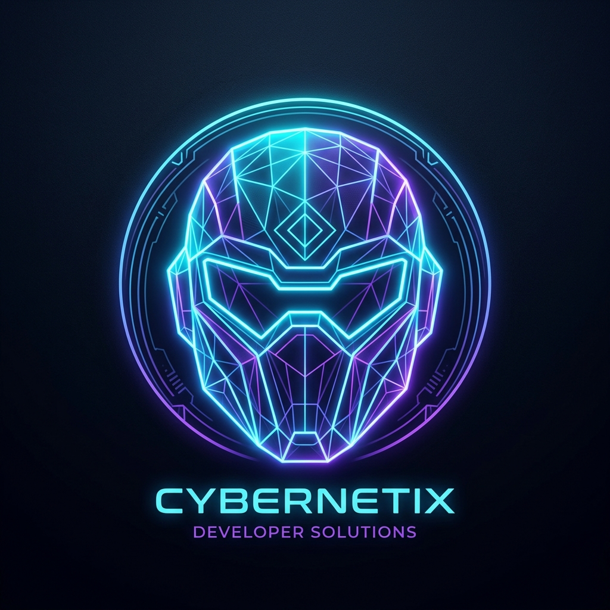
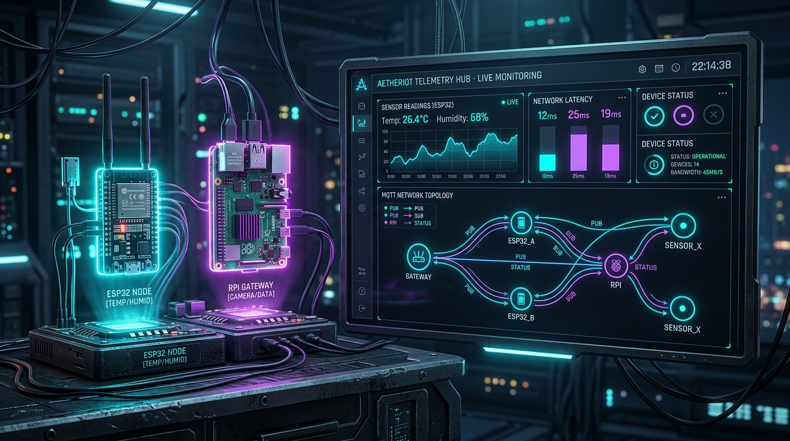
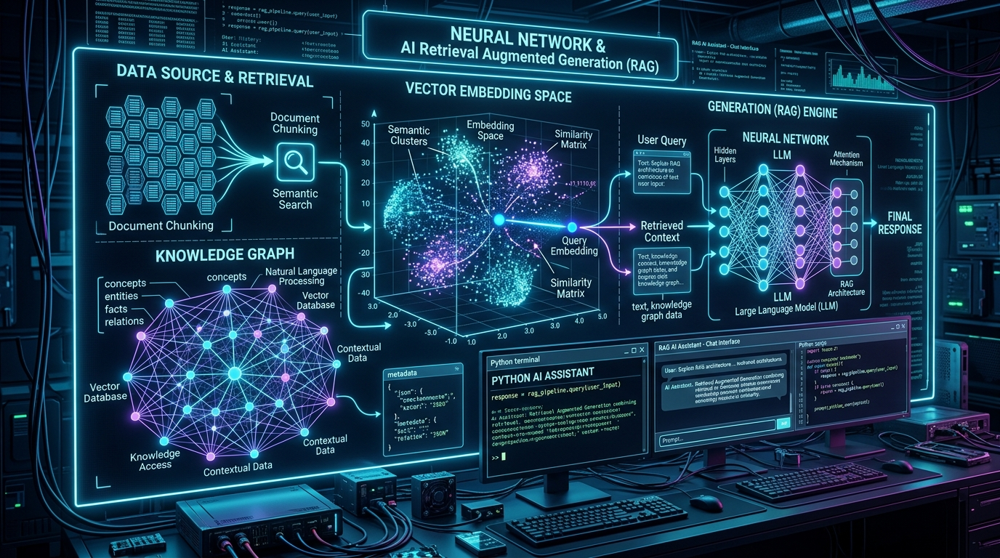
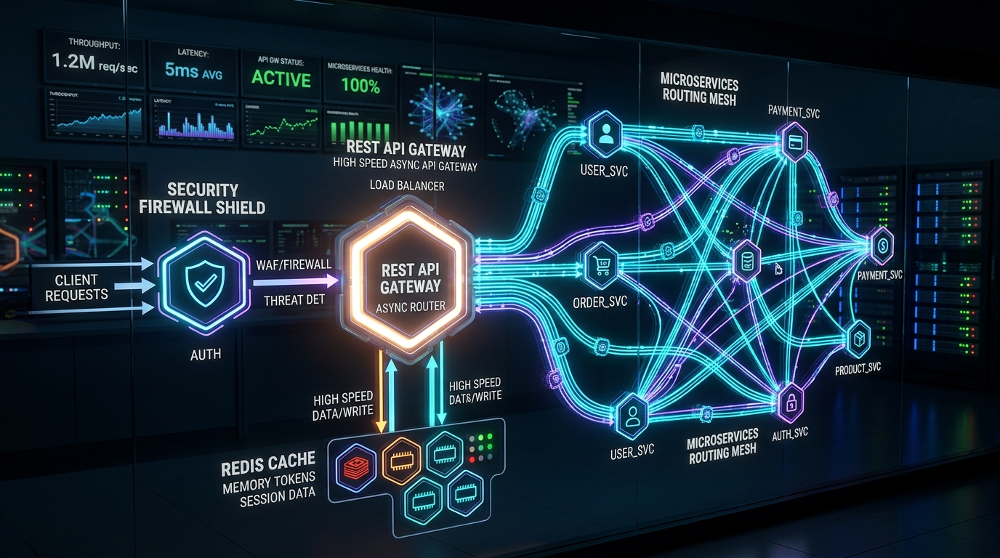
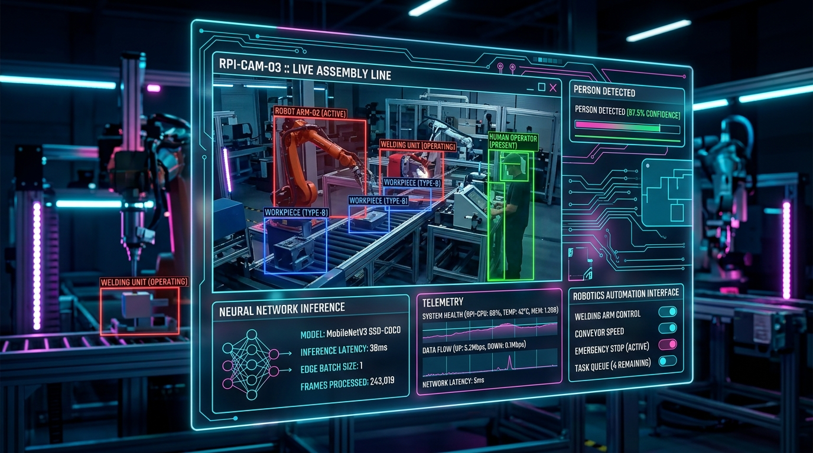

Hi, I'm Arghya Mukherjee — AI/ML & Cloud Engineer @ TCS. Specializing in Agentic AI, LLMs & RAG, multi-agent orchestration with LangGraph, LangChain & Strands Agents, enterprise cloud backends with AWS Bedrock & Azure, Kubernetes & CI/CD, and resilient Python & IoT architectures.

Prefer command-line interfaces? Query skills, projects, TCS Cloud & Agentic AI stacks, IoT node telemetry, and system diagnostics right from the embedded bash prompt.
Delivering next-generation multi-agent systems, AWS Bedrock generative pipelines, Kubernetes cloud deployments, and resilient Python architectures.
I am an AI/ML & Cloud Engineer at Tata Consultancy Services (TCS) with a deep passion for building autonomous agentic AI systems, enterprise RAG engines, and scalable cloud-native architectures.
My expertise spans orchestrating multi-agent state machines with LangGraph, LangChain & Strands Agents, building generative AI pipelines on AWS Bedrock & Azure, deploying containerized microservices on Kubernetes with automated CI/CD, and designing high-performance async Python backends alongside real-time IoT hardware telemetry.
Autonomous multi-agent swarms with LangGraph & Strands Agents.
Resilient Kubernetes, AWS Bedrock, Azure & automated CI/CD.
Building stateful multi-agent workflows with LangGraph, LangChain, and Strands Agents with human-in-the-loop controls and dynamic tool execution.
Orchestrating microservices on Kubernetes, Azure & AWS Bedrock with robust GitOps, automated CI/CD pipelines, Docker containers, and zero-downtime rollouts.
Enterprise Retrieval-Augmented Generation using AWS Bedrock foundation models, Chroma/Qdrant vector stores, and hybrid semantic rerankers.
High-throughput asynchronous backends with FastAPI, AsyncIO, Celery, and real-time ESP32/Raspberry Pi MQTT sensor telemetry pipelines.
Experience live sensor stream telemetry. This interactive lab simulates an active ESP32 microcontroller cluster transmitting data packets over MQTT to an async Python broker.
Real-world production systems spanning distributed IoT telemetry, asynchronous API gateways, and intelligent RAG architectures.

An end-to-end distributed sensor telemetry pipeline with ESP32 edge nodes, Mosquitto MQTT broker, and an asynchronous Python FastAPI real-time WebSocket analytics dashboard.

High-throughput technical documentation knowledge retrieval engine using LangChain, hybrid dense vector embeddings (Chroma/Qdrant), and streaming FastAPI generation.

High-performance async reverse proxy and microservices router featuring Redis token-bucket rate limiting, dynamic routing, and JWT cryptographic verification.

On-device computer vision inspection pipeline running lightweight neural networks on Raspberry Pi with OpenCV frame processing and real-time GPIO relay actuation.
Core expertise across Agentic AI, Enterprise Cloud, Distributed Python Backends, and IoT Telemetry.
Professional experience at TCS, enterprise Agentic AI deployments, and continuous cloud innovation.
Designing and deploying enterprise-scale Agentic AI workflows using LangGraph, LangChain & Strands Agents. Implementing generative AI pipelines and RAG architectures on AWS Bedrock & Azure. Managing containerized microservice deployments on Kubernetes (K8s) with automated CI/CD pipelines and robust Python async backends.
Engineered asynchronous API gateways with Redis rate limiters, WebSocket stream channels, vector database retrieval pipelines (Chroma/Qdrant), and Docker containerized deployment architectures.
Pioneered real-time MQTT telemetry networks across Raspberry Pi and ESP32 microcontrollers, implementing automated relay shutoffs and low-latency sensor logging.
Have a project, backend challenge, or innovative AI/IoT idea? Let's connect and make it reality.
Feel free to reach out via email or connect with me on GitHub. I'm actively open for innovative freelance projects, full-stack backend roles, and IoT collaborations.